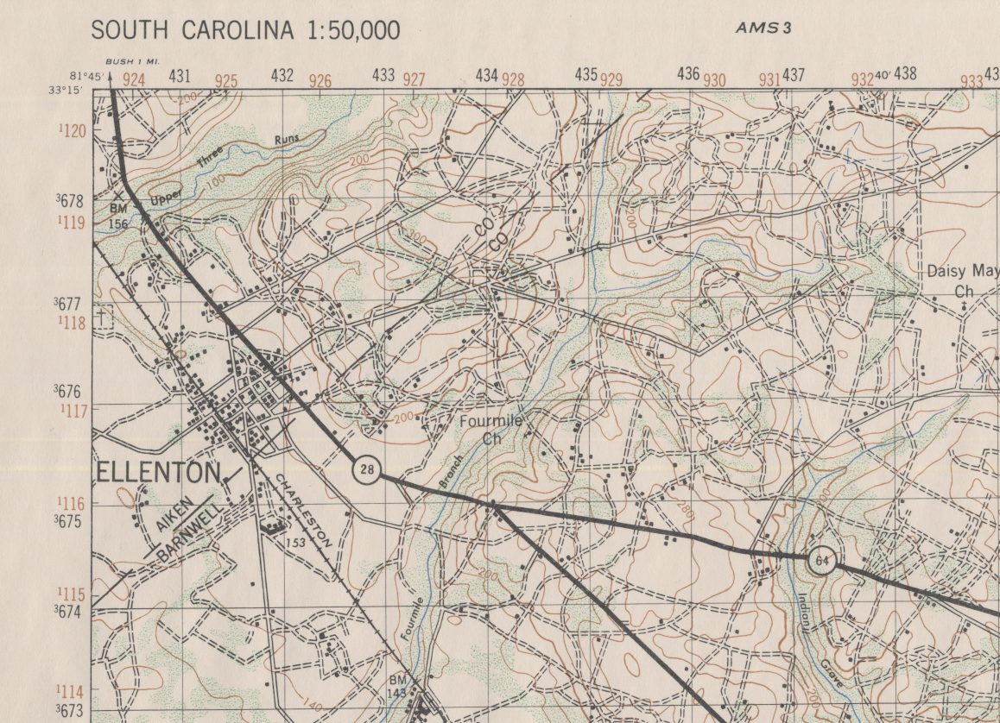
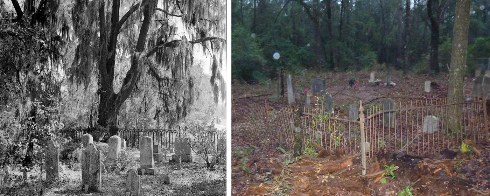
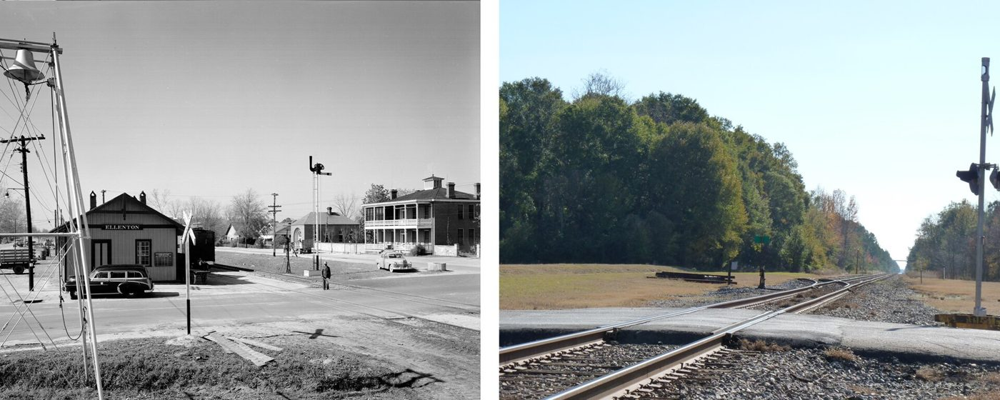

Part 2 of 7 in Chapter 1
The Towns Inside the Fence
The land was not empty. It held small, rural farming communities. Most of the farms were worked by tenants, and most of the farm workers were African American (WB: ch. 7). The largest town, Ellenton, had about 600 people; it began as a railroad station in 1873 (WB: ch. 7; WB: SRARP, 1996). Dunbarton, with 231 people, was a railroad town incorporated in 1910 (WB: ch. 7; WB: SRARP, 1993).
Smaller settlements, among them Meyers Mill, Hawthorne, Robbins, Leigh and Hattieville, were mostly stops on the railroad. Du Pont moved the boundary to leave out two others, Jackson and Snelling (WB: ch. 7). Ellenton had a violent past: in 1876, during Reconstruction, armed white rifle clubs marched on Black militia there in what became known as the Ellenton riot (WB: SRARP).
A state historical marker for the town of Ellenton stands on Highway 64 at Barnwell (WB: Historical Marker Database). A second marker, titled "Site of Ellenton" and put up in 1993 by the Ellenton Reunion Organization, stands on Atomic Road, State Highway 125, near Jackson (WB: Historical Marker Database).


How many people were moved depends on who is counting. The first press release spoke of about 1,500 families; early reports said up to 8,000 farmers; the AEC (Atomic Energy Commission) settled on 6,000 people in 1,500 families (WB: ch. 8). The Savannah River Archaeological Research Program later put it at about 5,000 (WB: SRARP).
The process of acquiring the land was run by the Army Corps of Engineers, with residents of the first area gone by March 15, 1951, and of the second by June 1. Landowners who disputed their land appraisal went to federal condemnation proceedings. At least 4,500 graves had to be moved (WB: ch. 8). By late 1951 the government was acquiring 265 tracts in Ellenton alone (DL).

.jpg){kind=link}
Owners objected to how their land was bought. A congressional staff report in late 1951 found Ellenton residents told to be gone by February 1952, while their property was still unappraised. Each owner was given a single offer at the appraised value. Those who took the first offer were as much as 20 percent worse off than those who held out. About a hundred owners met twice to protest the prices.
The Atomic Energy Commission answered that most condemnations came from defects in title rather than price: owners who could not show clear legal ownership, often because land had passed to many heirs, or who could not be found. Of 169 cases it listed, 39 were over price and 130 over title, It conceded that juries in seven contested cases had awarded substantially more than the government's appraisal (DL).
The magazine The Reporter brought the story to the nation in March 1951, when it reported on the quiet doom of Ellenton (IA). Jet told a different part of it that December, focusing on Black families moving whole houses fifteen miles to New Ellenton, the replacement town.
Its photograph ran under the heading "H-Bomb Victims" (IA). A 1965 federal housing study counted about 30 white and 120 Black families relocated near New Ellenton (IA), and by 1953 Congress was hearing that New Ellenton had been left out of aid it needed (DL).
The displaced spoke for themselves decades later, in oral histories collected from 1990 and published as Memories of Home for Ellenton and for Dunbarton and Meyers Mill (WB: OSTI 272945; WB: OSTI 10171577). The program's web pages and the chapter PDFs survive in Wayback; srarp.org itself is gone (WB; WB: Ellenton volume).
James McBride's life of James Brown traces part of the singer's family to Ellenton, where relatives "cared for one another's children" (IA). Louise Cassels's The Unexpected Exodus (1971), the classic memoir of the leaving, is cataloged in Open Library, though it has no copy to read or borrow yet (OL: Open Library).

.jpg){kind=link}
Follow this thread, the displaced towns. Continues in Chapter 3, The Plant's Museum.